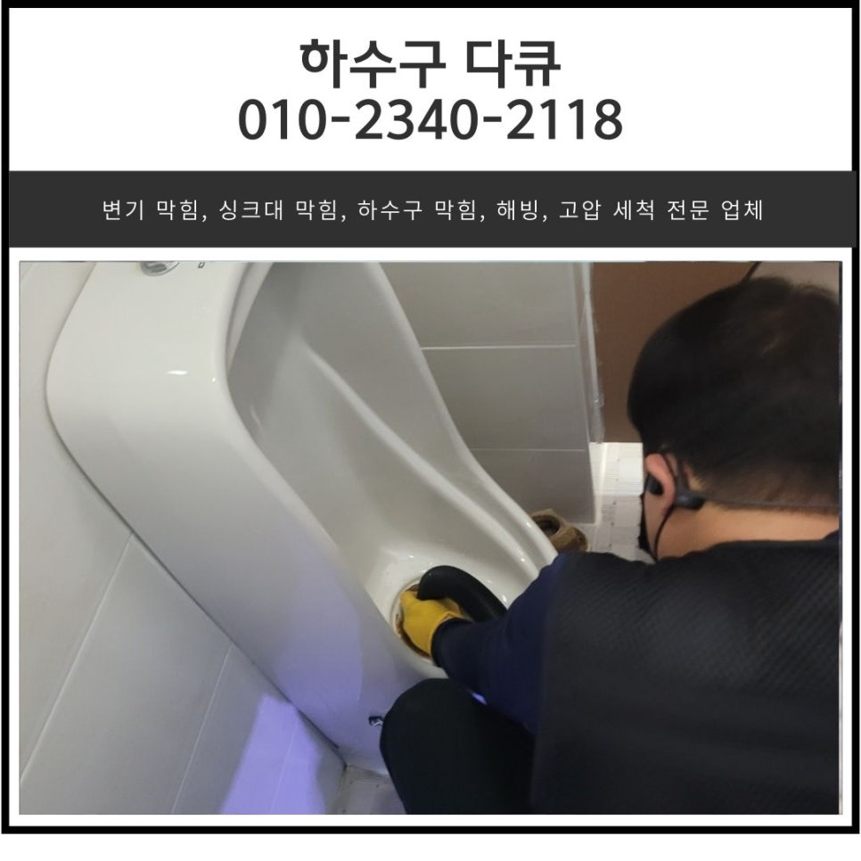
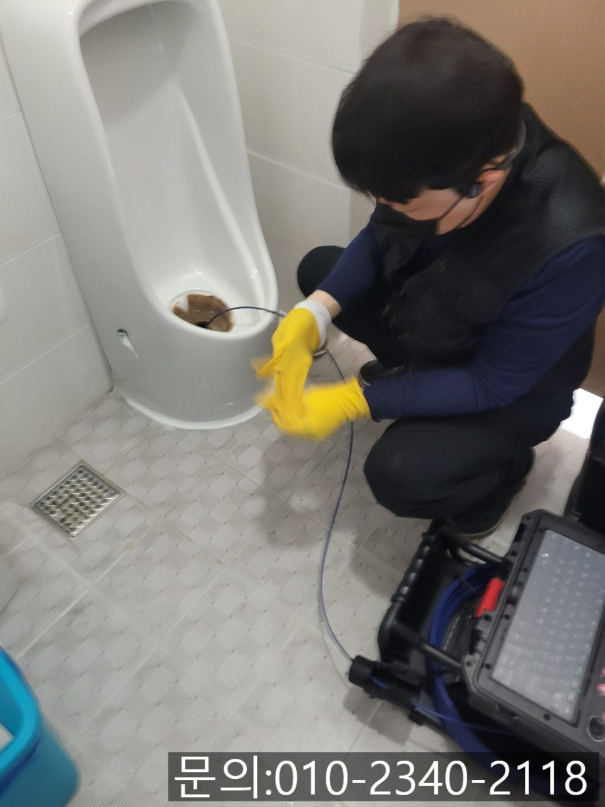
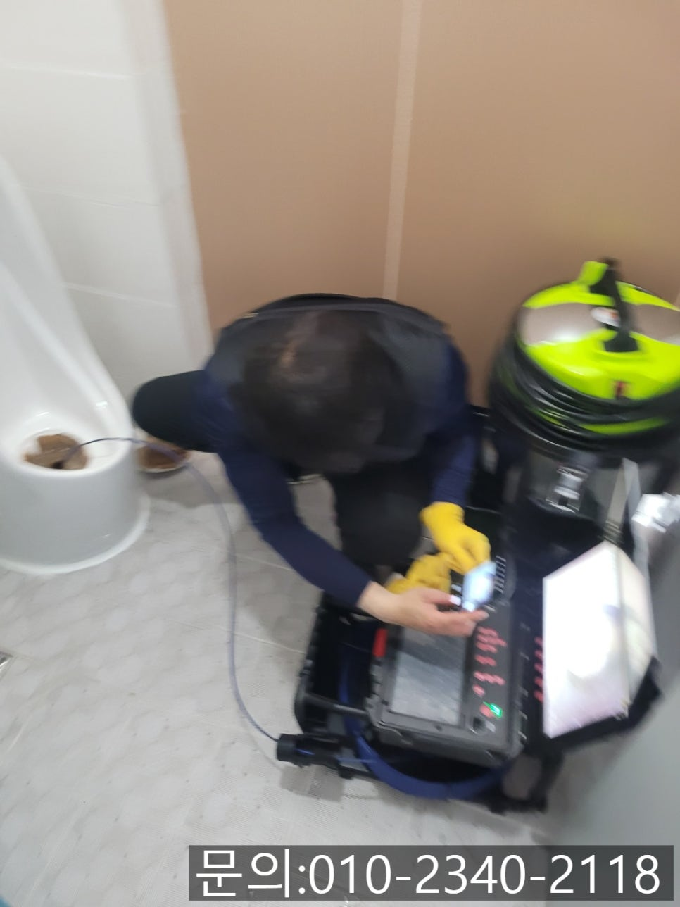
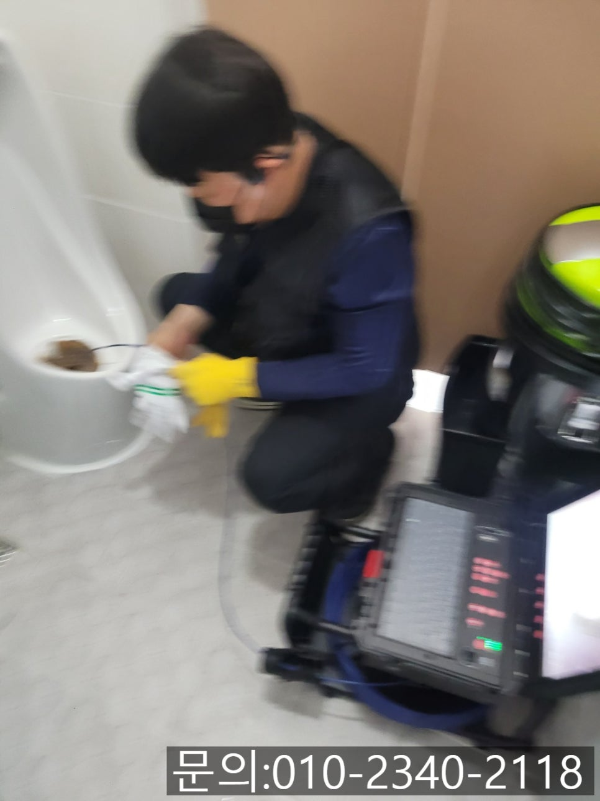
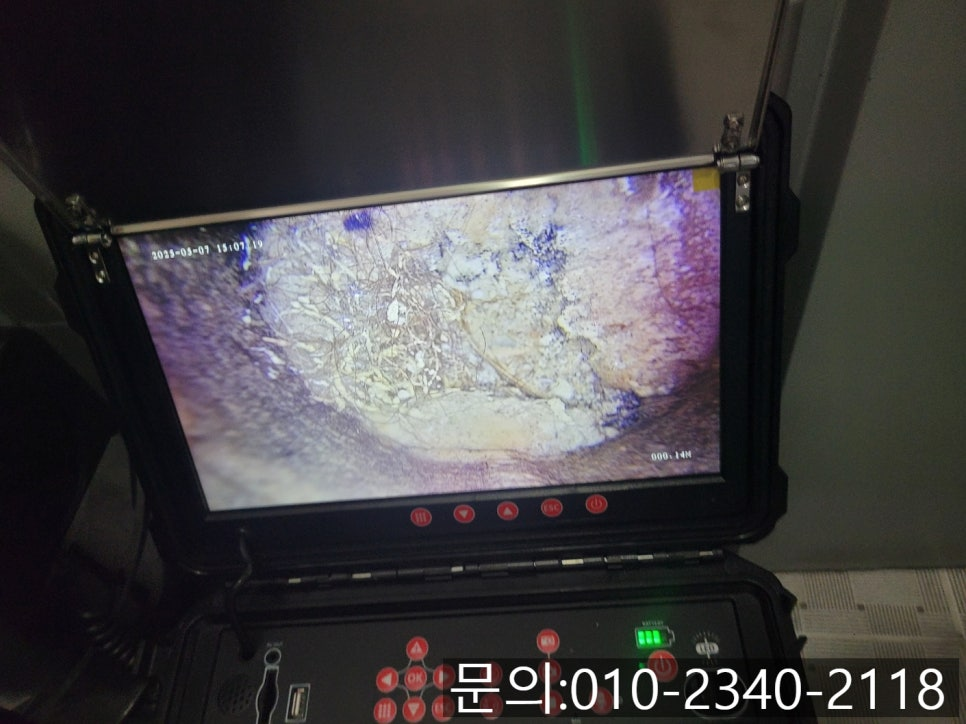
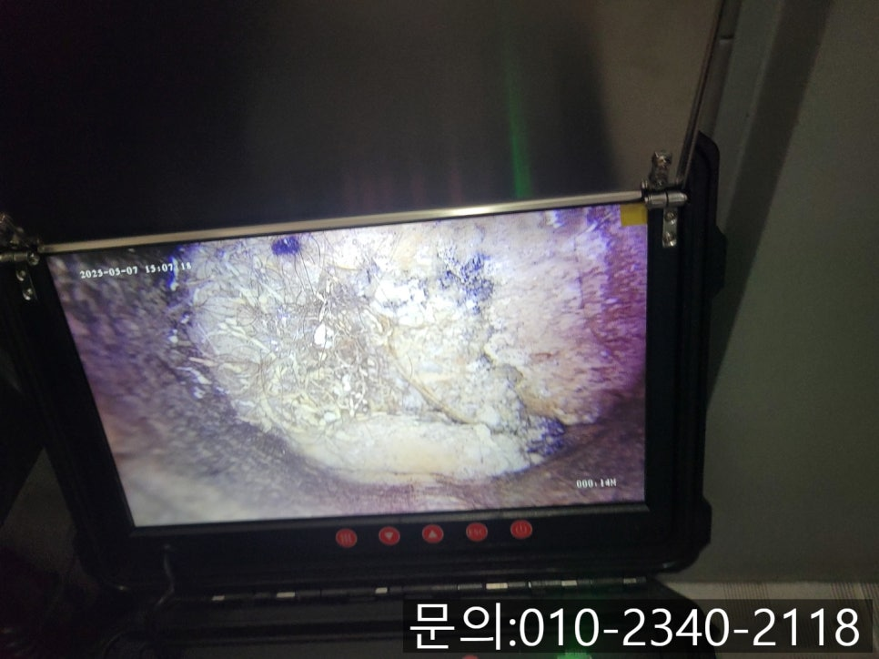
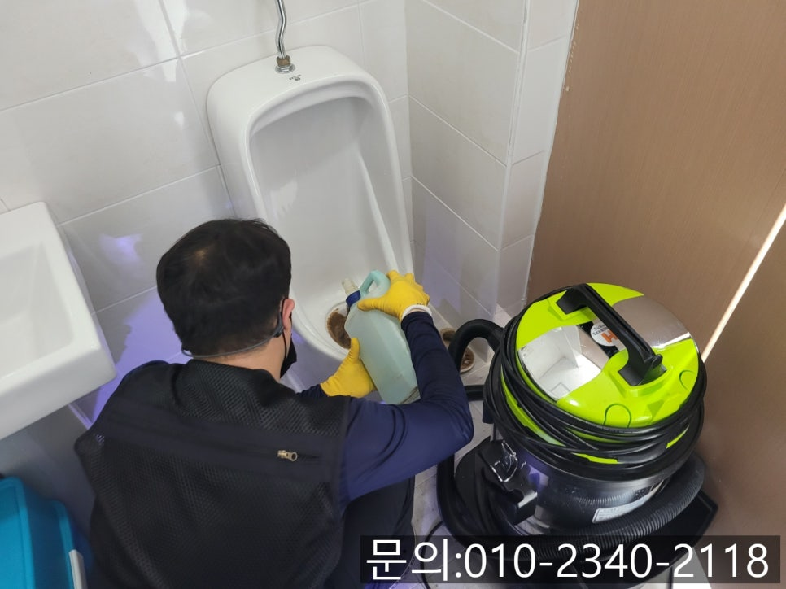

🏠 수내동 하수구 막힘 성남 운중동 화장실 소변기 역류 배관 청소 전문 업체
성남 변기막힘 전문 시공 후기

📋 작업 개요
- 위치: 성남
- 서비스 유형: 변기막힘, 하수구막힘, 배관막힘, 역류해결, 뚫는업체, 배관청소
- 작업 일시: 2025. 5. 9. 19:43
- 업체명: 하수구수사대 (010-5615-2118)
🔍 문제 상황
안녕하세요.
수내동 하수구 막힘, 성남 운중동 화장실 소변기 역류, 배관 청소 전문 업체 하수구 다큐입니다.
상가 화장실의 경우 하루에도 수십, 수백 명의 불특정 다수가 사용하는 공간입니다.
특히 남자화장실의 소변기는 짧은 시간 안에 반복적으로 사용되고, 막힘이 발생하게 되면 많은 사람들이 불편해지다 보니 주기적인 관리가 필요해요.
지금부터 수내동 하수구 막힘으로 다녀온 현장을 사진과 함께 소개해 드리겠습니다.

🔎 원인 분석
💡 전문가 진단: 정밀 진단 장비를 사용하여 슬러지의 고착 여부를 판명하고 타격/세척 작업을 실시했습니다.
상가에 위치한 남자 화장실 소변기가 막혀 악취가 심하게 진동하고, 물이 내려가지 않아 민원이 발생한다며 빨리 방문해 해결해달라고 하셨습니다.
고객님께 주소를 받아 신속하게 현장에 도착해 화장실에 들어가 보니 코를 찌르는 악취로 힘들었지만 수내동 하수구 막힘의 원인을 파악해 보기로 했어요.
내시경 카메라를 배관 내부로 진입 시켜보니 배관을 꽉 막고 있는 이물질을 확인할 수 있었습니다.
수내동 하수구 막힘의 원인은 요석이었어요.
소변기 막힘의 원인 중 하나이자 가장 흔한 문제인 요석은 소변 속에 포함된 칼슘, 마그네슘 등의 무기질 성분이 시간이 지나면서 굳어진 것으로, 배관 벽면에 딱딱하게 달라붙어 점점 물길을 좁아지게 만듭니다.

🔧 작업 과정
요석은 청소로 제거되지 않기 때문에, 배관 내부에서 쌓이다가 배관을 완전히 막아 물이 역류하게 만드는데요.
막힘의 원인을 파악했으니 뚫는 작업을 시작할게요.
다른 현장의 경우 이물질이 배관을 막고 있을 때 플렉스 샤프트를 사용해 제거하겠지만 요석의 경우 단단한 광물 성분이기 때문에, 요석 전용 약품을 사용해야 합니다.
성남 운중동 화장실 소변기 역류 배관 청소 전문 업체 하수구 다큐는 석회를 부드럽게 만들어주는 화학 약품을 소변기에 투입한 다음 30~40분 정도 시간을 두고 석회가 부드러워지도록 기다렸어요.
화학약품을 투입하고 석회가 어느 정도 부드러워진 다음 플렉스 샤프트를 사용해 석회를 제거하는 작업을 진행합니다.
플렉스 샤프트 장비는 본체에 연결되어 있는 전동드릴의 회전력을 이용해 요석을 부수는 작업을 진행하는데요.
플렉스 샤프트로 인해 배관 벽면에서 떨어져 나온 이물질은 석션을 이용해 빨아드려 완벽하게 제거합니다.
여러 차례 플렉스 샤프트와 석션을 사용해 석회를 제거하는 작업을 진행하자 배관이 깨끗해진 걸 확인할 수 있었어요.


✅ 작업 완료
배관을 막고 있던 이물질이 모두 제거되고 깨끗해진 배관 내부를 내시경 카메라를 이용해 확인한 다음 소변기에 많은 양의 물을 부어 통수 테스트도 진행했습니다.
소변기에 많이 쌓이는 요석(석회)의 경우 배수구 클리너 같은 제품으로는 해결할 수 없습니다.
지금 소변기 막힘으로 고민하고 계시다면 전문 장비와 기술을 보유하고 있는 하수구 다큐와 함께 해결해 보세요!




⚠️ 하수구 배관 막힘 예방 및 관리 가이드
- ✅ 머리카락, 비닐, 물티슈 등 물에 분해되지 않는 이물질은 하수구 유입을 절대 금지해 주세요.
- ✅ 하수구 거름망을 씌우고 모여진 이물질은 주기적으로 쓰레기통에 바로 비워주셔야 합니다.
- ✅ 배관 노후가 심할 경우 이물질이 더 쉽게 걸리므로 주기적인 배관 세척(고압세척 등)을 권장합니다.
- ✅ 작업 후 1년 이내 재발 시 하수구수사대에서 무상 A/S 보증 서비스를 제공합니다.
💡 핵심 정리
- 확실한 장비 작업(내시경 점검 및 샤프트 스케일링)으로 원인을 뿌리 뽑습니다.
- 작업 후 1년 이내에 동일한 부위 재발 시 100% 무상 A/S 서비스를 보장합니다.
- 서울 · 경기 · 인천 전 지역에 24시간 언제든 긴급 출동할 수 있도록 항시 대기 중입니다.
❓ 자주 묻는 질문 (FAQ)
🚨 성남 변기막힘 문제로 고민이신가요?
정확한 원인 진단과 확실한 시공으로 재발 없는 해결을 약속드립니다.
24시간 긴급 출동 | 서울 · 경기 · 인천 전지역 | 1년 내 재발 시 무상 A/S